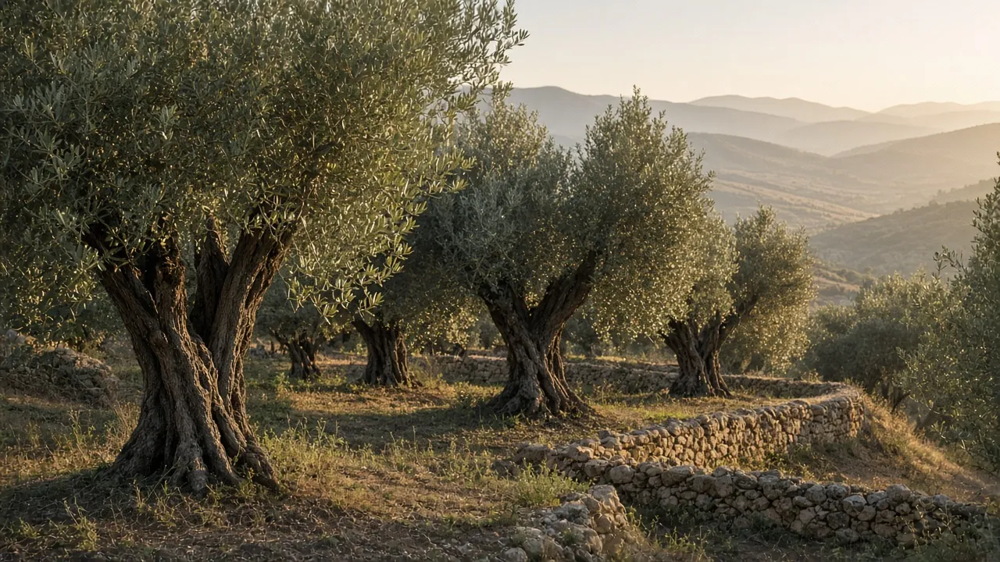
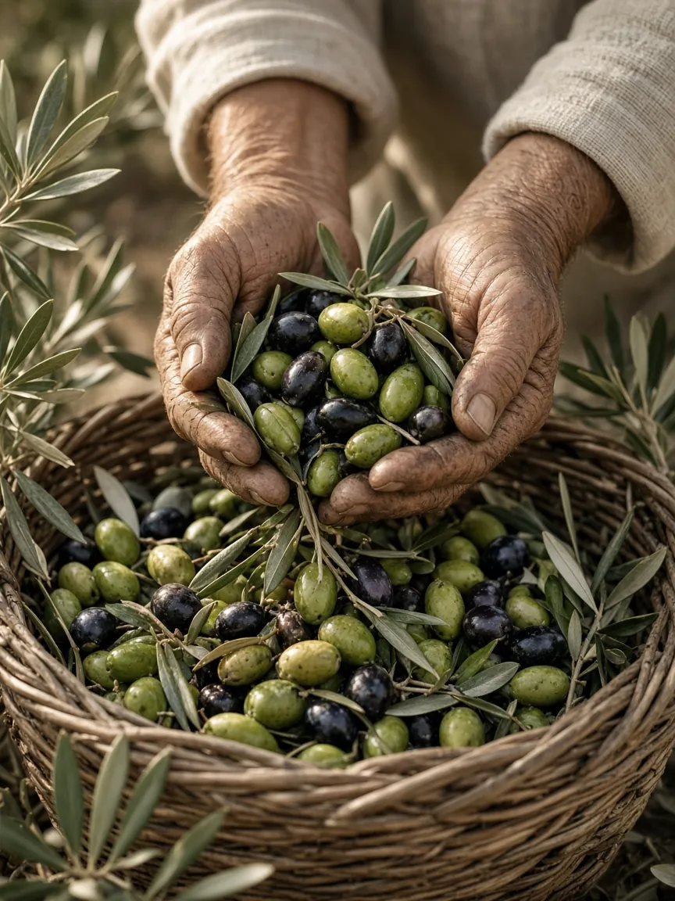
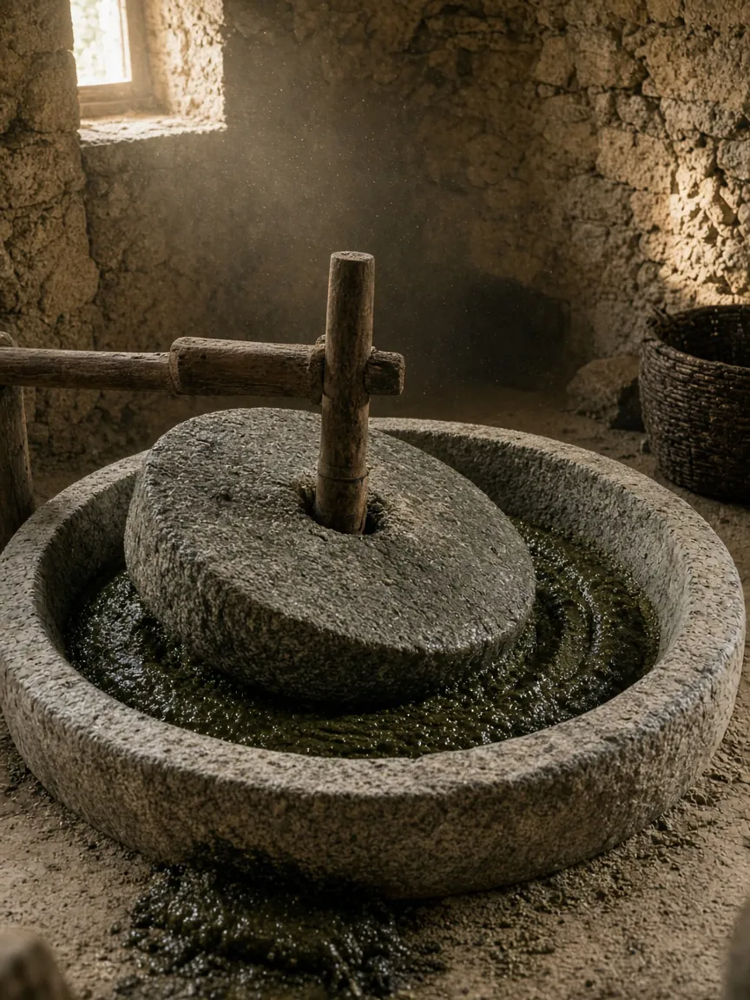
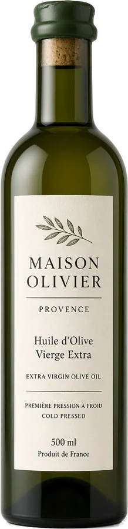
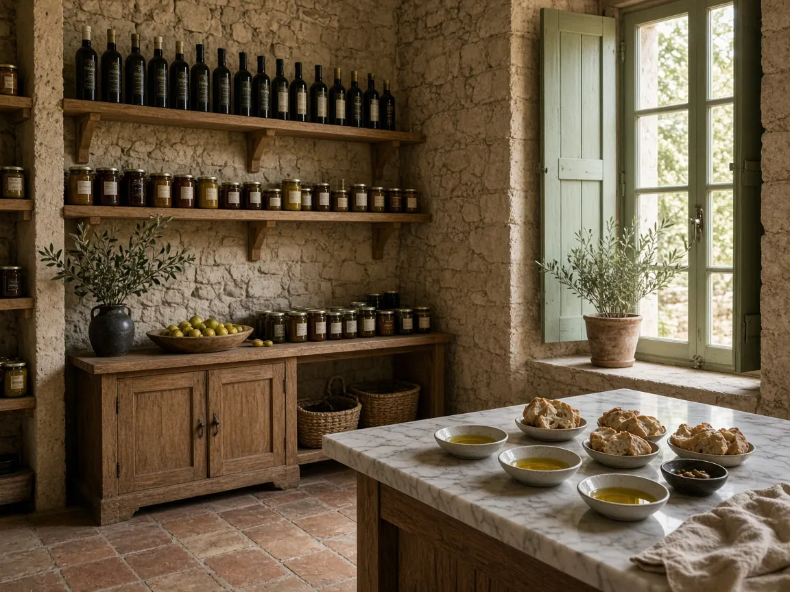

Liquid gold,
unhurried.
A cold first pressing keeps everything the olive was: green almond, cut grass, a gentle pepper at the back of the throat.
Chapter I — The Grove
On the terraced hills above Grasse, we pick our olives by hand, press them the same day, and bottle only what the season gives us.
A cold first pressing keeps everything the olive was: green almond, cut grass, a gentle pepper at the back of the throat.
Olives travel from tree to stone mill in a single afternoon. Nothing waits, nothing oxidises, nothing is blended in.
Each batch rests, settles and is bottled in small runs at the atelier — then sealed in wax, one at a time.

Origin
Maison Olivier began as one terrace of old trees and a borrowed press. The trees are still the heart of it — pruned by hand in spring, never rushed, harvested only when the fruit turns from green to violet.
What we cannot grow ourselves, we buy from neighbouring growers we know by name: lemons from Menton, lavender from the plateau, honey from hives a few valleys over. Everything is made in small batches in the atelier behind the boutique.
The Range
All prices shown are examples for this concept.
Chapter III — The Atelier

Combed from the branches onto nets, sorted the same morning. Bruised fruit never makes it to the mill.

Granite wheels turn the olives into paste slowly, without heat, so the aroma stays in the oil.

The oil settles naturally, then is bottled in small runs and sealed in wax at the atelier.

Visit the boutique
Our tasting counter is open every day the shop is. Bread, three oils, and as long as you like to decide.
Letters from the grove
Harvest dates, new pressings, and the first bottles of each season. No spam.